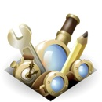
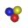
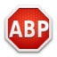

Firefox 擴充套件絕對精選：三十億次下載中最棒的八個套件

◎ 本文原載 Mozilla Links 正體中文版，原文章連結按此。
不久以前，某個人達成了第 30 億次 Firefox 的附加元件下載安裝。3,000,000,000 次，那可真是有夠多的！（要打一堆零在後面！）
從這 30 億次下載資料中，我們特別挑選出了以下 8 支附加元件並在此介紹。它們都是真正精選中的精選！不但是最多人使用的，也都具備充分的上榜理由。讓我們從第 8 名開始介紹起。

＃8
| 首先是每天擁有超過 180 萬使用者的 Personas Plus 附加元件。「Persona（個性面板）」是輕量級的 Firefox 佈景主題，而 Personas Plus 擴展了 Firefox 的內建個性面板功能，讓你可以更容易地控制及取用最新、最熱門、或者你最喜歡的個性面板主題。安裝這個套件後，在你的狀態列（或附加元件列）上，會出現一 個狐狸面具圖示，點選會跳出一個選單，讓你可以選擇、改變、或隨機變化你的 Firefox 佈景主題。 |
＃7
| 接下來是每天擁有 190 萬使用者的 DownThemAll。它是 Firefox 中第一、也是唯一一支「下載管理／加速」套件，特色是可以讓你增加下載速度最高達四倍，並且允許你在任何時間暫停及恢復下載，讓你可以完全掌控你想要的下載體驗。 |
＃6
| 第六名是每天超過 220 萬使用者的 NoScript 。這個工具可以給予你的 Firefox 面對安全性漏洞的額外保護。它能夠限制只執行可信任網域（像是你設定的個人銀行網頁）所提供的 JavaScript、Java 和其它可執行程式，保護你免於受到特定種類的網路攻擊所威脅。 |
＃5
| 接下來是每天超過 225 萬使用者的 Download Statusbar。它讓你可以簡潔的在狀態列中直接檢視和管理下載狀況，而不需使用原有的下載視窗，還具有完整的自訂界面與自動隱藏功能，提供不中斷使用的完整控制能力。 |
＃4、＃3
| 第四和第三名是 Firefox 的開發者粉絲最喜歡的工具：Greasemonkey 和 Firebug， 每天各擁有超過 260 萬和 320 萬使用者。Greasemonkey（暱稱油猴子）讓你可以用簡單的 JavaScript 自訂網頁的顯示和行為；Firebug 受歡迎的原因則源自於讓你可以即時編輯、除錯及監控任何網頁的 CSS、HTML、和 JavaScript 程式碼。 | |
＃2
|  | 30 億次附加元件下載中的亞軍是擁有超過 700 萬使用者的 Video DownloadHelper，擷取下載網頁內容的工具。它的功用是從許多網站中抓取影片、聲音和圖片檔案。在瀏覽網頁時，當 Video DownloadHelper 偵測到它可以為你服務，工具列上的小圖示就會變成會旋轉的動畫，此時簡單地點選圖示，就可以下載你要的檔案了。 |
＃1
|  | 我們恭喜最多人使用，每日有 1470 萬使用者（總下載次數超過一億七千萬次）的附加元件 Adblock Plus。Firefox 的粉絲喜歡它的原因是，它給了大家如何檢視網頁的控制權。一名評論者提到：「不論是在行動裝置或是桌面平台上，Adbock Plus 就是我使用 Firefox 的理由之一！」 |
這裡有更多關於 30 億次附加元件下載的統計資訊，當邁向第 40 億次下載時，會不會有其他新的套件排到前面來呢？這些最受歡迎的附加元件，你也可以馬上擁有——立刻到 Firefox 附加元件網站，下載你最喜歡的附加元件，幫助它們登上排行榜吧！
原文 / The Best of 3 Billion Add-on Downloads | The Den
授權 / 創用CC 姓名標示-相同方式分享-3.0